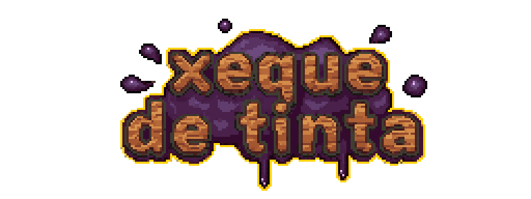
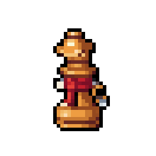
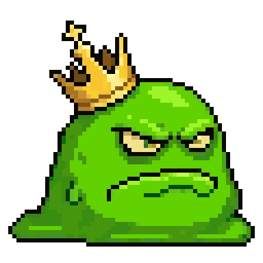
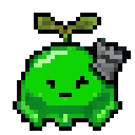
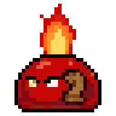
Num salão antigo, à luz de uma vela, existe um tabuleiro de xadrez gigante. Certa noite, alguém derramou sobre ele uma tinta mágica roxa e verde. A tinta escorreu pelas casas e "afogou" as peças: torres, cavalos e bispos viraram slimes, e o próprio rei do xadrez virou o Rei Slime, com a coroa afundada na gosma.
Só uma peça escapou: o Peão, a peça mais fraca do jogo. Sem poder nenhum, só com uma espadinha de ferro, um cachecol vermelho e muita teimosia, ele precisa atravessar o tabuleiro manchado, casa por casa, até enfrentar o Rei Slime e secar a tinta de vez.
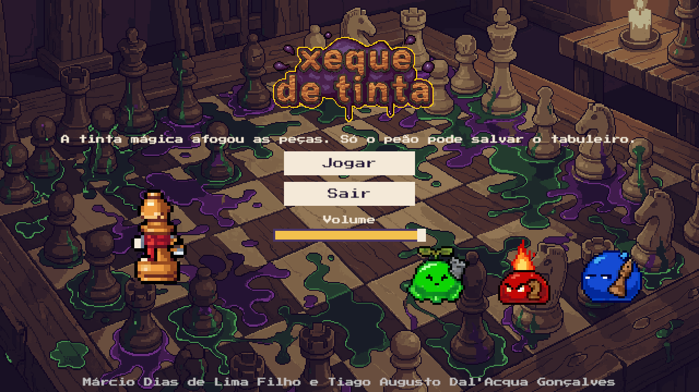
| Vida | 50 |
| Elemento | Neutro (os elementos vêm das cartas que ele joga) |
| Energia | 3 por turno |
| Mão | 5 cartas por turno |
| Deck inicial | 5 Golpe, 4 Defender e 1 Investida |
O Peão anda pelo tabuleiro (pulinhos de casa em casa), ataca com a espada na batalha, recua quando apanha e tomba quando cai. Sua força cresce com as cartas que você ganha, compra e melhora durante a partida e com as relíquias que encontra.
Cada slime carrega, afundada na gosma, uma peça de xadrez e um detalhe do seu elemento (folha, chama ou gota). Acima da cabeça de cada inimigo aparece a intenção: o que ele vai fazer no próximo turno, com o número do dano quando for um ataque. Use isso para decidir entre atacar e se defender.
Vida 18 · Elemento Planta. Carrega uma torre cinza afundada no flanco. A cada turno sorteia: ataca com Investida (5 de dano) ou ganha 4 de escudo com Casca. Nunca faz escudo duas vezes seguidas. Fraco contra Fogo.
Vida 14 · Elemento Fogo. Tem uma chama no topo e uma cabeça de cavalo de madeira afundada no corpo. Ataca com Investida (7 de dano). A cada 3 turnos, em vez de atacar, solta Chama e aplica Queimadura 2 em você. Fraco contra Água.
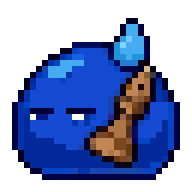
Vida 22 · Elemento Água. Tem uma gota no topo e o bispo de mitra pontuda afundado. Todo turno usa Respingo: 4 de dano e cura 3 de vida do aliado mais ferido (ou dele mesmo, se estiver sozinho). É o mais resistente dos três. Fraco contra Planta.
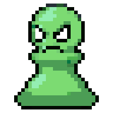
Vida 8 · Elemento Planta. Um pequeno peão de xadrez derretendo, com rostinho. Só aparece quando o Rei Slime o invoca. Ataca com Cutucada: 3 de dano. Um Mirim recém-invocado só age no turno seguinte. Fraco contra Fogo.
Vida 70 · Elemento Planta · tamanho duplo (64 px). O rei do xadrez tomado pela tinta, com a coroa de rei (com a cruz) afundada na gosma. Ele repete um ciclo de três ações:
Quando a vida cai abaixo de 50%, ele se enfurece e ganha 2 de Força (uma vez só): todos os ataques dele passam a bater mais forte. Fraco contra Fogo.
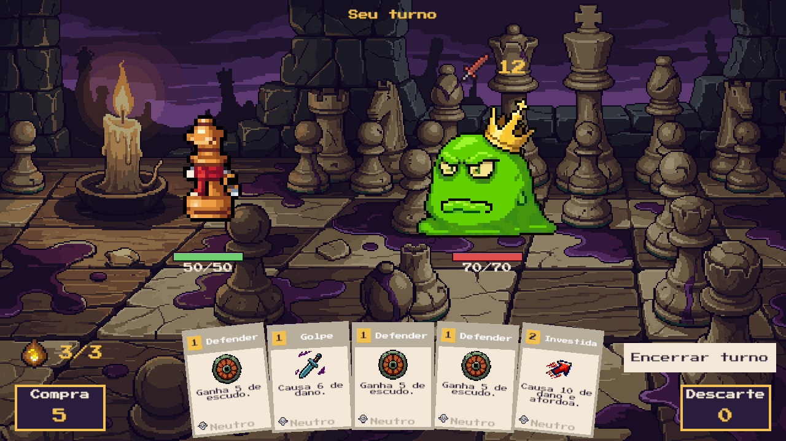
O jogo é todo controlado pelo mouse. Há dois atalhos de teclado.
| Ação | Como fazer |
|---|---|
| Rolar o dado e andar | Clique em Rolar dado ou aperte Espaço |
| Escolher o caminho numa bifurcação | Clique na casa para onde quer ir (a seta dourada indica as opções) |
| Ver seu baralho | Botão Ver deck, no tabuleiro |
| Jogar uma carta | Clique na carta da mão. Se ela precisar de alvo, clique no inimigo |
| Cancelar a escolha de alvo | Esc ou botão direito do mouse |
| Encerrar o turno | Botão Encerrar turno ou Espaço |
| Pausar | Esc (menu: Continuar, Voltar ao título) |
| Ajustar o volume | Controle deslizante na tela de título |
| Comprar, escolher, confirmar | Clique nos botões dos painéis |
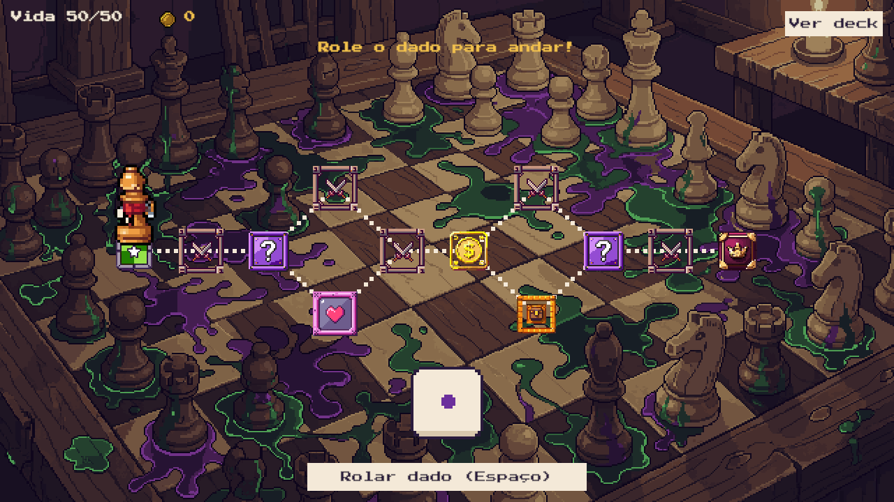
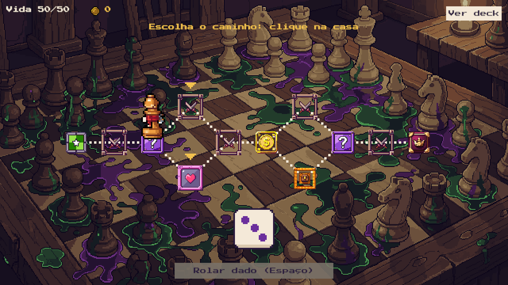
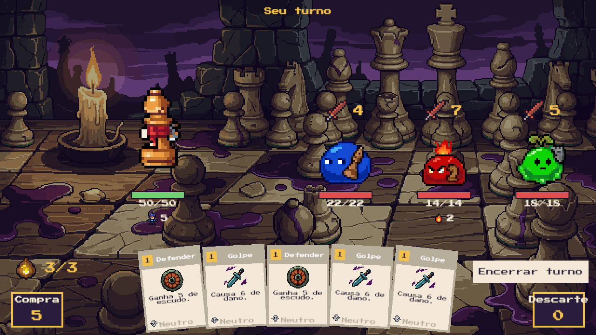
Você fica à esquerda; até 3 inimigos ficam à direita. A cada turno seu:
Você vence quando todos os inimigos caem. Você perde quando sua vida chega a zero.
O desenho abaixo mostra a pilha de Compra e a de Descarte (à direita da mão), a energia (à esquerda) e o botão de encerrar turno.
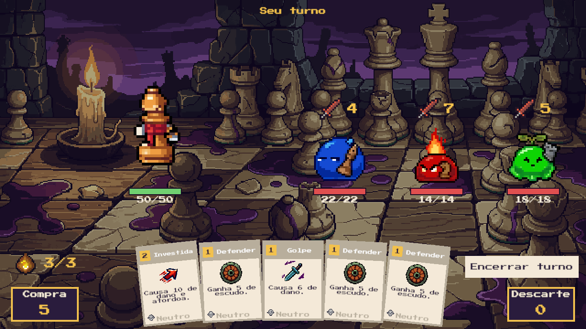
As cartas e os inimigos têm elemento. O ataque de um elemento forte contra um elemento fraco causa +50% de dano e mostra "Eficaz!" em dourado.
| Ícone | Elemento | Vence | Perde para |
|---|---|---|---|
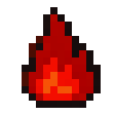 |
Fogo | Planta | Água |
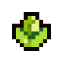 |
Planta | Água | Fogo |
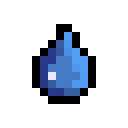 |
Água | Fogo | Planta |
| Neutro | ninguém | ninguém |
Fogo vence Planta, Planta vence Água, Água vence Fogo. Como o Slime Verde, o Rei Slime e o Mirim são de Planta, cartas de Fogo (Bola de Fogo, Brasa) são suas melhores amigas contra a maioria dos inimigos. Contra o Slime Vermelho (Fogo), use Água; contra o Azul (Água), use Planta.
Como o dano é calculado: dano base da carta + sua Força → ×1,5 se for eficaz → ×0,75 se quem ataca estiver Fraco → arredonda para baixo → o escudo do alvo absorve primeiro, e o que sobrar tira vida.
| Ícone | Status | O que faz |
|---|---|---|
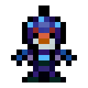 |
Escudo | Absorve dano antes da vida. Zera no início do turno de quem o tem. |
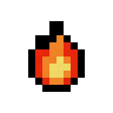 |
Queimadura (N) | No início do turno do alvo, ele perde 2 de vida (ignora o escudo). Dura N turnos; aplicar de novo soma turnos. |
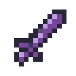 |
Fraco (N) | Quem está Fraco causa 25% menos dano por N turnos. |
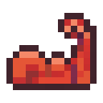 |
Força (N) | +N de dano em cada ataque até o fim da batalha. |
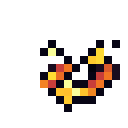 |
Atordoado | Pula a próxima ação. O inimigo atordoado guarda a intenção para o turno seguinte. |
| Ícone | Intenção | Significa |
|---|---|---|
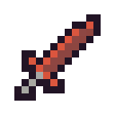 |
Ataque | Vai causar dano (o número aparece ao lado) |
| Defesa | Vai ganhar escudo | |
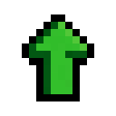 |
Buff | Vai se fortalecer |
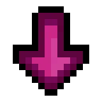 |
Debuff | Vai aplicar um efeito ruim em você (por exemplo, Queimadura) |
| Invocar | Vai chamar reforços |
Cada carta mostra o custo de energia, o nome, a ilustração, o efeito e o elemento (a cor da moldura também indica: vermelho Fogo, verde Planta, azul Água, cinza Neutro). Uma carta melhorada (no Descanso ou pela Poça de Tinta) ganha um "+" no nome e valores maiores. Cartas com Esgota saem da batalha depois de usadas.
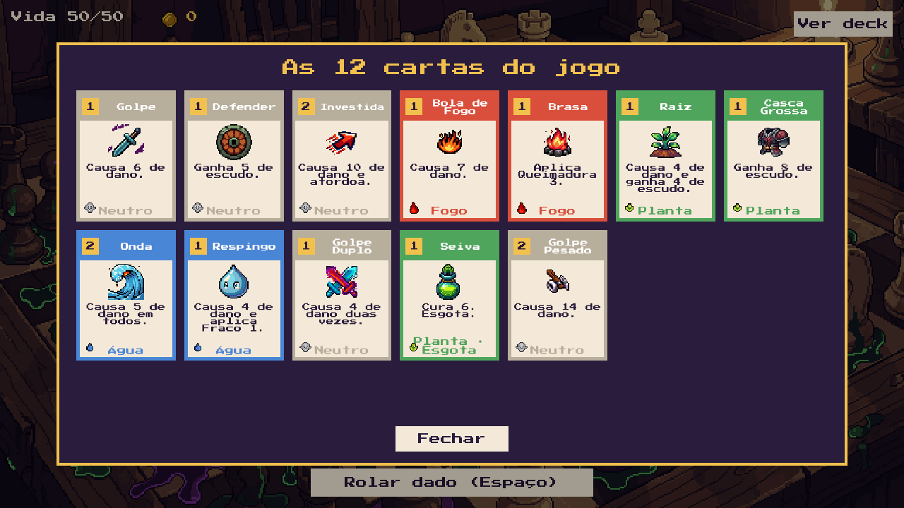
| Carta | Custo | Elemento | Efeito | Melhorada |
|---|---|---|---|---|
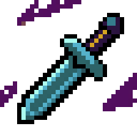 Golpe |
1 | Neutro | 6 de dano | 9 |
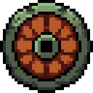 Defender |
1 | Neutro | 5 de escudo | 8 |
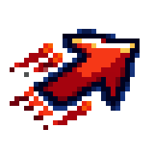 Investida |
2 | Neutro | 10 de dano e Atordoa o alvo | 14 |
| Carta | Custo | Elemento | Tipo | Efeito | Melhorada |
|---|---|---|---|---|---|
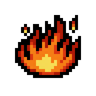 Bola de Fogo |
1 | Fogo | Ataque | 7 de dano | 10 |
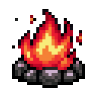 Brasa |
1 | Fogo | Skill | Queimadura 3 | Queimadura 5 |
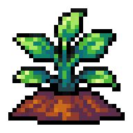 Raiz |
1 | Planta | Ataque + skill | 4 de dano e 4 de escudo | 6 e 6 |
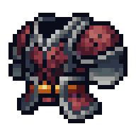 Casca Grossa |
1 | Planta | Skill | 8 de escudo | 11 |
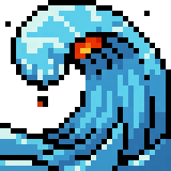 Onda |
2 | Água | Ataque em área | 5 de dano em todos os inimigos | 8 |
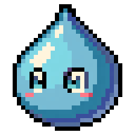 Respingo |
1 | Água | Ataque + skill | 4 de dano e Fraco 1 | 6 e Fraco 2 |
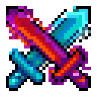 Golpe Duplo |
1 | Neutro | Ataque | 4 de dano duas vezes | 5 duas vezes |
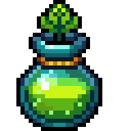 Seiva |
1 | Planta | Skill | Cura 6. Esgota | Cura 9 |
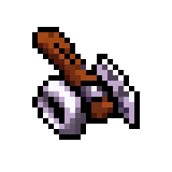 Golpe Pesado |
2 | Neutro | Ataque | 14 de dano | 18 |
Combinações que valem a pena: Respingo deixa um inimigo Fraco (−25% de dano) e ainda dá dano de Água; Brasa ataca ao longo do tempo e ignora escudo; Investida atordoa o inimigo mais perigoso e o faz perder o turno; Onda acaba com grupos de 3 slimes; Golpe Duplo é ótimo com a Força do Pincel Afiado, porque a Força soma em cada golpe.
O tabuleiro tem 12 casas, duas bifurcações (que voltam a se juntar) e o Chefe no fim.
| Casa | Ícone | O que acontece |
|---|---|---|
| Início | 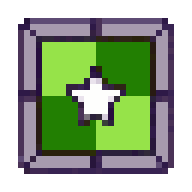 |
Ponto de partida. Nada acontece. |
| Batalha (5) | 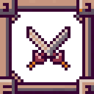 |
De 1 a 3 slimes. Vencendo: 10 a 15 moedas e 1 carta à escolha. |
| Loja (1) | 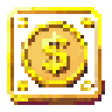 |
Compre cartas, uma relíquia, cura ou remova cartas. |
| Descanso (1) | 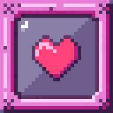 |
Cure 30% da vida máxima ou melhore 1 carta. |
| Evento (2) | 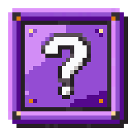 |
Uma escolha com risco e recompensa (seção 12). |
| Baú (1) | 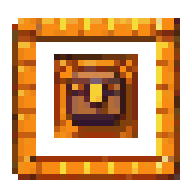 |
30 moedas e 1 relíquia aleatória. |
| Chefe (1) | 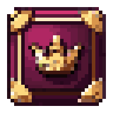 |
O Rei Slime. O Peão sempre para aqui. |
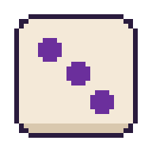
O dado do tabuleiro sorteia de 1 a 3: assim o Peão para em mais casas e a partida tem mais batalhas, eventos e lojas. A relíquia Dado Viciado deixa você rolar de novo.
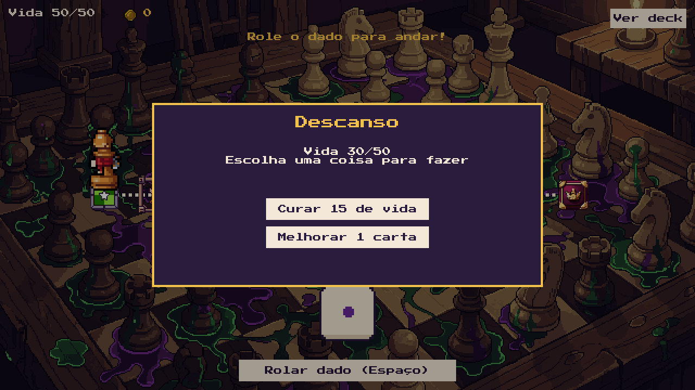
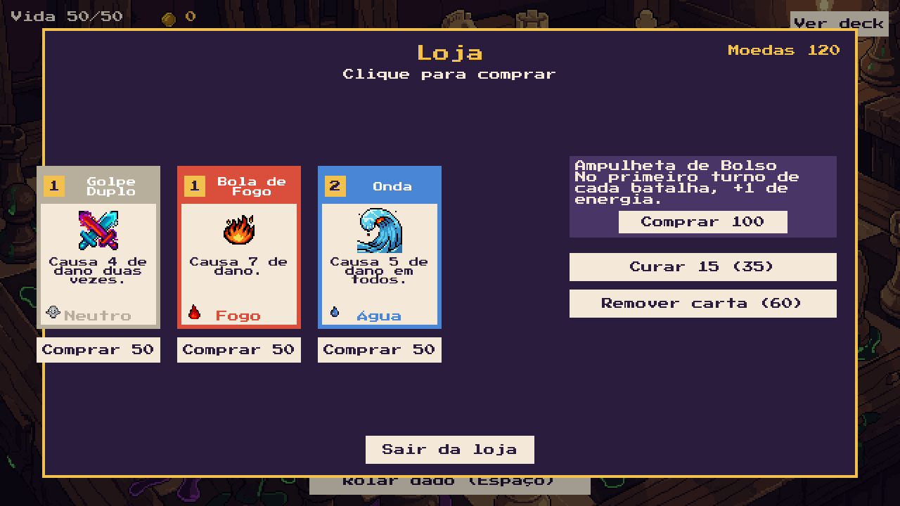
| Item | Preço |
|---|---|
| 3 cartas | 50 moedas cada |
| 1 relíquia | 100 moedas |
| Cura de 15 de vida | 35 moedas |
| Remover 1 carta do deck | 60 moedas |
Itens comprados somem da prateleira. Cura não vende com a vida cheia; remover carta não vende se o deck tiver só 1 carta.
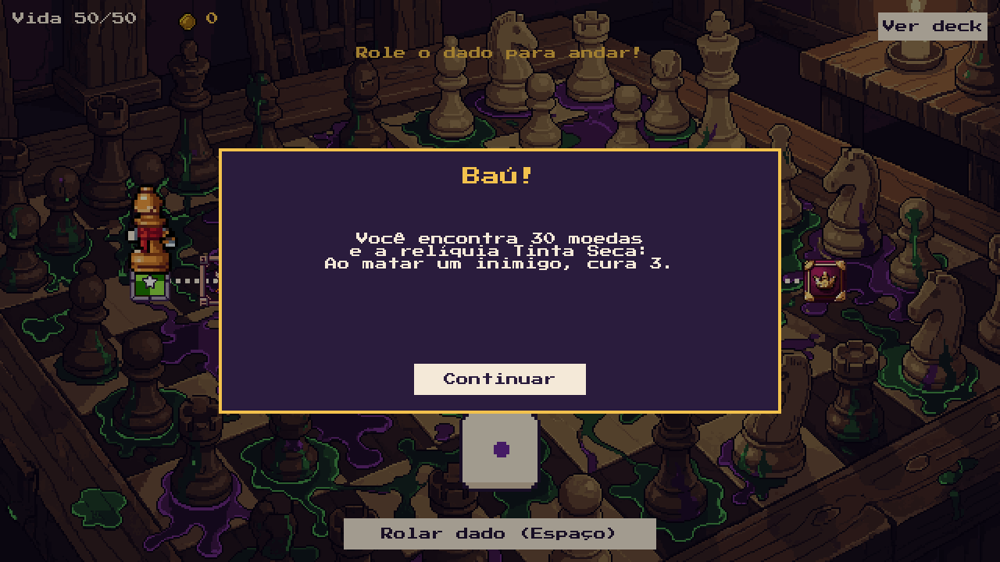
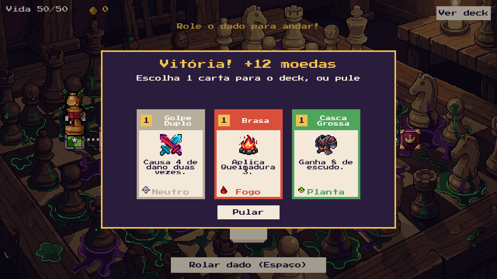
O botão Ver deck abre o painel com todas as suas cartas.
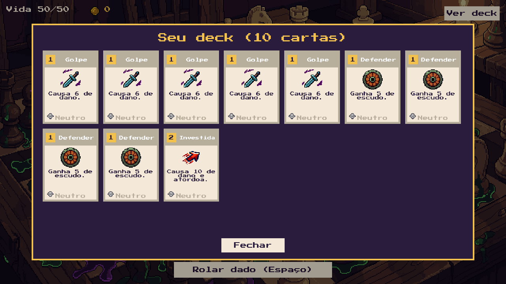
Relíquias são tesouros permanentes: valem até o fim da partida. Elas aparecem na barra do topo do tabuleiro (passe o mouse para ler a descrição). Você as ganha no Baú, na Loja e em eventos.
| Ícone | Relíquia | Efeito |
|---|---|---|
| Dado Viciado | Pode rolar o dado de novo (1 vez por rolagem). | |
| Base de Chumbo | Começa toda batalha com 5 de escudo. | |
| Tinta Seca | Ao matar um inimigo, cura 3 de vida. | |
| Pincel Afiado | Começa toda batalha com 1 de Força. | |
| Ampulheta de Bolso | No primeiro turno de cada batalha, +1 de energia. |
Ganhas depois de cada batalha (10 a 15) e no baú (30). Servem para comprar na loja. O contador fica no canto superior do tabuleiro, ao lado da vida.
As duas casas de Evento sorteiam 2 dos 3 eventos abaixo, sem repetir. Cada um tem duas escolhas.
| Evento | Escolha A | Escolha B |
|---|---|---|
| Poça de Tinta | Beber: perde 6 de vida e ganha 1 carta aleatória já melhorada | Seguir em frente |
| Dado Gigante | Rolar 1d6: 1-2 perde 8 de vida; 3-4 ganha 30 moedas; 5-6 ganha 1 relíquia | Não rolar |
| Fonte de Feltro | Beber: cura 12 de vida | Remover 1 carta do deck |
Perder vida num evento nunca mata: no pior caso sobra 1 de vida.
Vitória: derrote o Rei Slime. A tinta seca, o Peão comemora e aparece a tela de vitória com os créditos.
Derrota: se sua vida chegar a zero em qualquer batalha, a partida acaba. Você pode Tentar de novo (nova partida do zero) ou Voltar ao título. Não há save: cada partida começa do zero, e é isso que torna cada uma diferente.
Aperte Esc no tabuleiro ou na batalha.
Design, programação e documentação: Márcio Dias de Lima Filho e Tiago Augusto Dal'Acqua Gonçalves. Arte: gerada no PixelLab e selecionada e ajustada pela equipe. Sons e músicas: sintetizados pela equipe (obra própria, CC0). Fonte: Press Start 2P (SIL Open Font License 1.1). Motor: Unity 6 · C#.